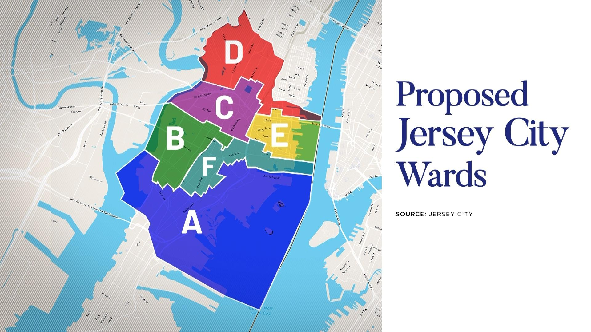
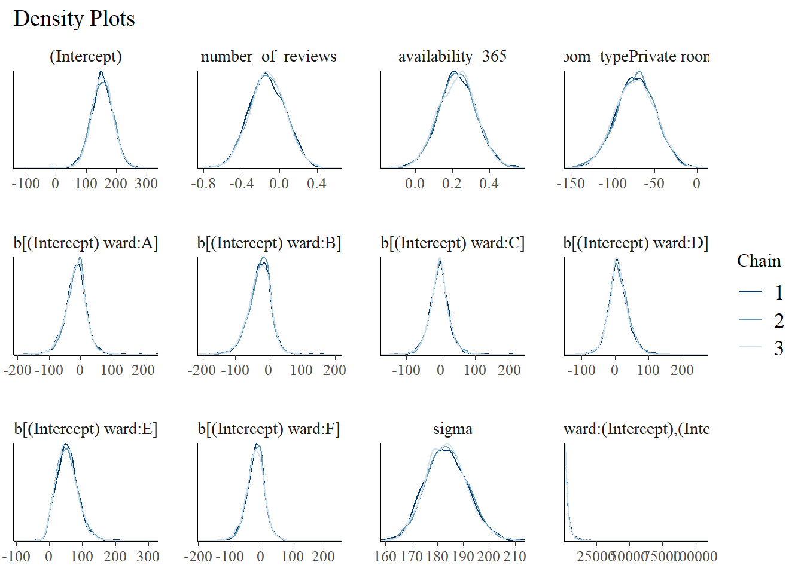
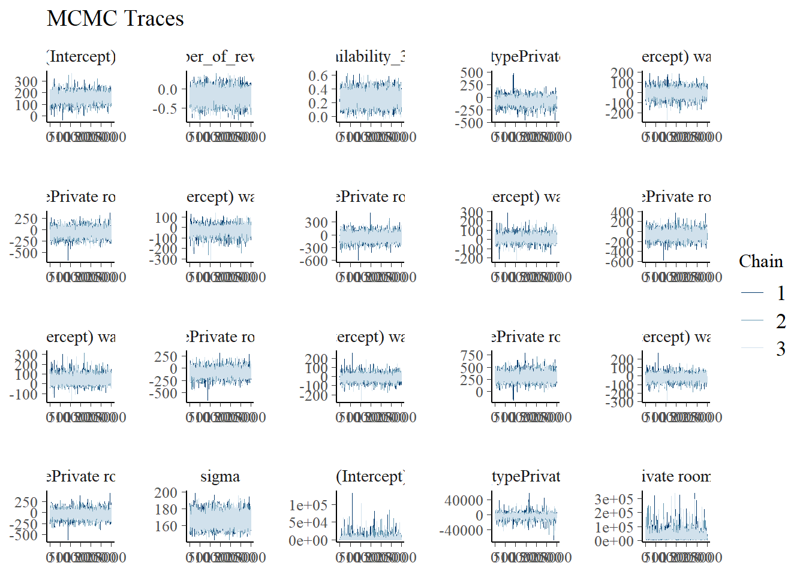
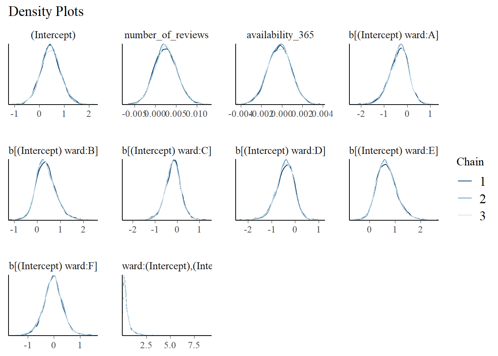
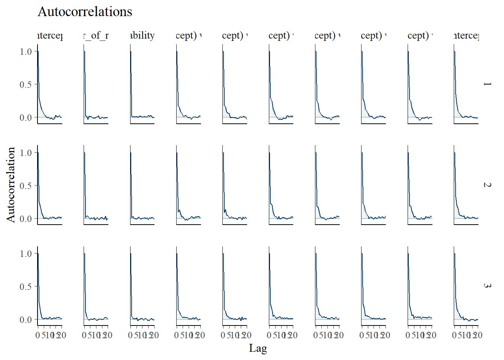
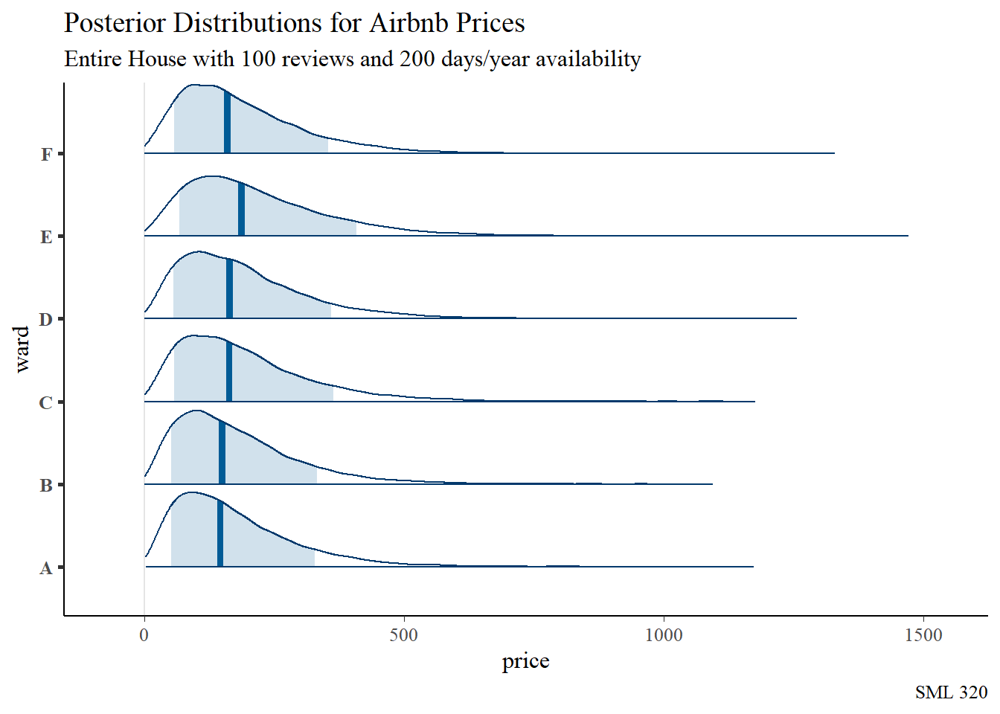

library("bayesplot")
library("bayesrules")
library("BLNN")
library("ggtext")
library("janitor")
library("nnet")
library("patchwork")
library("rstan")
library("rstanarm")
library("tidyverse")
knitr::opts_chunk$set(echo = TRUE)
airbnb_raw <- readr::read_csv("listings.csv")
# brand colors
# https://pickcoloronline.com/brands/airbnb/
airbnb_red <- "#FF5A5F"
airbnb_green <- "#00A699"
airbnb_orange <- "#FC642D"
airbnb_black <- "#484848"
airbnb_gray <- "#767676"Non-Normal Hierarchical Models
Goals:
- Further explore hierarchical models
- Apply the Bayesian mindset to neural networks
Data
- source: Airbnb listings
- 22 December, 2023
- “Summary information and metrics for listings in Jersey City (good for visualisations).”
Before data wrangling:
- 1549 observations
- 18 variables

Data Wrangling
- extracted
wardclassification - nonzero
availablity_365 - excluded rare “Hotel” or “Shared Room” listing
- removed observations with missing values
After data wrangling:
- 1348 observations
- 7 variables
airbnb_df <- airbnb_raw |>
mutate(ward = stringr::str_sub(neighbourhood,6,6)) |>
select(price, host_id, number_of_reviews, availability_365,
room_type, ward) |>
filter(availability_365 > 0) |>
filter(room_type %in% c("Entire home/apt", "Private room")) |>
na.omit() |>
group_by(host_id) |>
mutate(listings = n()) |>
ungroup()Variables
Response Variable
\(Y\): price of Airbnb listing
- numerical response
Predictor Variables
- \(X_{1}\): number of reviews
- \(X_{2}\): availability over year (1 to 365 days)
- \(X_{3}\): room type (entire place or private room)
Tier Variables
ward: political subdivision of Jersey City

Interaction Hierarchies
ward_intercept_model <- rstanarm::stan_glmer(
price ~ number_of_reviews + availability_365 + room_type +
(1 | ward), ...)
ward_interaction_model <- rstanarm::stan_glmer(
price ~ number_of_reviews + availability_365 + room_type +
(room_type | ward), ...)\[\mu_{ij} = \beta_{0j} + \beta_{1}X_{ij1} + \beta_{2}X_{ij2} + \beta_{3}X_{ij3}\]
- assumes relationships between price and predictors are similar for each
ward
\[\mu_{ij} = \beta_{0j} + \beta_{1j}X_{ij1} + \beta_{2}X_{ij2} + \beta_{3}X_{ij3}\]
- assumes that the relationship between price and
room_typemight be different for eachward
start_time <- Sys.time()
airbnb_for_stan <- airbnb_df |>
mutate(room_bin = ifelse(room_type == "Entire home/apt", 1, 0)) |>
group_by(ward) |>
slice_sample(prop = 0.2) |>
ungroup()
ward_intercept_model <- rstanarm::stan_glmer(
price ~ number_of_reviews + availability_365 + room_type +
(1 | ward),
data = airbnb_for_stan, family = gaussian,
adapt_delta = 0.999, chains = 3, iter = 3000*2, refresh = 0, seed = 320)
ward_interaction_model <- rstanarm::stan_glmer(
price ~ number_of_reviews + availability_365 + room_type +
(room_type | ward),
data = airbnb_for_stan, family = gaussian,
adapt_delta = 0.999, chains = 3, iter = 3000*2, refresh = 0, seed = 320)
end_time <- Sys.time()
print(round(end_time- start_time))Time difference of 4 mins
Function
model_diagnostics <- function(the_stan_model){
p1 <- bayesplot::mcmc_trace(the_stan_model, size = 0.1) +
labs(title = "MCMC Traces")
print(p1)
p2 <- bayesplot::mcmc_dens_overlay(the_stan_model) +
labs(title = "Density Plots")
print(p2)
p3 <- bayesplot::mcmc_acf(the_stan_model) +
labs(title = "Autocorrelations")
print(p3)
# effective sample size
print("Effective Sample Size:")
print(bayesplot::neff_ratio(the_stan_model))
# split-R metric
print("R-Hat")
print(bayesplot::rhat(the_stan_model))
}model_diagnostics(ward_intercept_model)

[1] "Effective Sample Size:"
(Intercept) number_of_reviews
0.5086667 0.9522222
availability_365 room_typePrivate room
0.8895556 0.7847778
b[(Intercept) ward:A] b[(Intercept) ward:B]
0.6232222 0.5092222
b[(Intercept) ward:C] b[(Intercept) ward:D]
0.4440000 0.4608889
b[(Intercept) ward:E] b[(Intercept) ward:F]
0.3303333 0.4488889
sigma Sigma[ward:(Intercept),(Intercept)]
0.8438889 0.3378889
[1] "R-Hat"
(Intercept) number_of_reviews
1.0002625 0.9998291
availability_365 room_typePrivate room
0.9998054 0.9998069
b[(Intercept) ward:A] b[(Intercept) ward:B]
1.0001120 1.0001326
b[(Intercept) ward:C] b[(Intercept) ward:D]
1.0000578 0.9999769
b[(Intercept) ward:E] b[(Intercept) ward:F]
1.0003429 1.0003948
sigma Sigma[ward:(Intercept),(Intercept)]
1.0000282 1.0005024 model_diagnostics(ward_interaction_model)
[1] "Effective Sample Size:"
(Intercept)
0.6875556
number_of_reviews
1.1898889
availability_365
1.1043333
room_typePrivate room
0.3803333
b[(Intercept) ward:A]
0.7395556
b[room_typePrivate room ward:A]
0.4583333
b[(Intercept) ward:B]
0.5922222
b[room_typePrivate room ward:B]
0.4535556
b[(Intercept) ward:C]
0.6764444
b[room_typePrivate room ward:C]
0.4266667
b[(Intercept) ward:D]
0.4473333
b[room_typePrivate room ward:D]
0.4472222
b[(Intercept) ward:E]
0.5104444
b[room_typePrivate room ward:E]
0.4584444
b[(Intercept) ward:F]
0.6493333
b[room_typePrivate room ward:F]
0.4303333
sigma
1.0692222
Sigma[ward:(Intercept),(Intercept)]
0.3853333
Sigma[ward:room_typePrivate room,(Intercept)]
0.4280000
Sigma[ward:room_typePrivate room,room_typePrivate room]
0.4431111
[1] "R-Hat"
(Intercept)
0.9998817
number_of_reviews
0.9998938
availability_365
0.9999321
room_typePrivate room
1.0003472
b[(Intercept) ward:A]
0.9998446
b[room_typePrivate room ward:A]
1.0002946
b[(Intercept) ward:B]
0.9999827
b[room_typePrivate room ward:B]
1.0003456
b[(Intercept) ward:C]
0.9999604
b[room_typePrivate room ward:C]
1.0003508
b[(Intercept) ward:D]
1.0000062
b[room_typePrivate room ward:D]
1.0001489
b[(Intercept) ward:E]
1.0002141
b[room_typePrivate room ward:E]
1.0003427
b[(Intercept) ward:F]
0.9998399
b[room_typePrivate room ward:F]
0.9999825
sigma
0.9998949
Sigma[ward:(Intercept),(Intercept)]
1.0004354
Sigma[ward:room_typePrivate room,(Intercept)]
1.0002091
Sigma[ward:room_typePrivate room,room_typePrivate room]
0.9997902 set.seed(320)
bayesrules::prediction_summary(ward_intercept_model, data = airbnb_df) |>
mutate_if(is.numeric, round, digits = 4) mae mae_scaled within_50 within_95
1 67.536 0.362 0.8479 0.9785set.seed(320)
bayesrules::prediction_summary(ward_interaction_model, data = airbnb_df) |>
mutate_if(is.numeric, round, digits = 4) mae mae_scaled within_50 within_95
1 54.5806 0.3202 0.796 0.9607p1 <- bayesplot::pp_check(ward_intercept_model) +
labs(title = "Ward Intercept Model", x = "price") +
theme_minimal() +
theme(axis.text.y = element_blank(),
axis.ticks.y = element_blank(),
legend.position = "none")
p2 <- bayesplot::pp_check(ward_interaction_model) +
labs(title = "Ward Interaction Model", x = "price") +
theme_minimal() +
theme(axis.text.y = element_blank(),
axis.ticks.y = element_blank(),
legend.position = "bottom")
p1 + p2Model Statistics
Coefficients
broom.mixed::tidy(ward_intercept_model,
effects = "fixed", #beta coefficients
conf.int = TRUE, conf.level = 0.90) |>
mutate_if(is.numeric, round, digits = 4)# A tibble: 4 × 5
term estimate std.error conf.low conf.high
<chr> <dbl> <dbl> <dbl> <dbl>
1 (Intercept) 153. 35.3 93.2 212.
2 number_of_reviews -0.128 0.195 -0.441 0.192
3 availability_365 0.227 0.101 0.059 0.392
4 room_typePrivate room -72.3 23.9 -112. -33.7 - \(\beta_{0}\) (practically significant): when \(X_{1} = X_{2} = 0\) and the Airbnb listing is for a whole house/apartment, the average price is about $186
- \(\beta_{1}\) (practically significant): for each review of the location, the price decreases by about 15 cents.
- \(\beta_{2}\) (practically significant): for every additional day that the location is available during the year, the price increases by about 13 cents.
- \(\beta_{3}\) (practically significant): compared to the baseline of “Entire house/apt” locations, the private room listings tend to be about $115 cheaper.
Hierarchy
broom.mixed::tidy(ward_intercept_model,
effects = "ran_vals", #values of randomness
conf.int = TRUE, conf.level = 0.90) |>
mutate_if(is.numeric, round, digits = 4)# A tibble: 6 × 7
level group term estimate std.error conf.low conf.high
<chr> <chr> <chr> <dbl> <dbl> <dbl> <dbl>
1 A ward (Intercept) -12.8 29.0 -72.8 36.4
2 B ward (Intercept) -23.7 31.2 -85.3 22.2
3 C ward (Intercept) -3.62 24.3 -50.9 42.3
4 D ward (Intercept) 8.61 26.2 -36.4 62.1
5 E ward (Intercept) 52.2 32.0 3.98 111.
6 F ward (Intercept) -15.7 26.2 -67.6 28.3Ward E is the only one that is “practically significant” (based on the 90-percent credible intervals for the coefficients), and its coefficient shows how listings in that ward tend to be more expensive than the population average.
ANOVA
var_df <- broom.mixed::tidy(ward_intercept_model,
effects = "ran_pars", #parameters of randomness
conf.int = TRUE, conf.level = 0.90) |>
mutate_if(is.numeric, round, digits = 4)
var_df #print# A tibble: 2 × 3
term group estimate
<chr> <chr> <dbl>
1 sd_(Intercept).ward ward 54.9
2 sd_Observation.Residual Residual 184.
Function
Extract_Variances <- function(V){
v1 <- unlist(V[1,3]^2 / (V[1,3]^2 + V[2,3]^2)) |> round(digits = 4)
v2 <- unlist(V[2,3]^2 / (V[1,3]^2 + V[2,3]^2)) |> round(digits = 4)
print(paste0("Within Group Variance: ", v1))
print(paste0("Between Group Variance: ", v2))
}Extract_Variances(var_df)[1] "Within Group Variance: 0.0821"
[1] "Between Group Variance: 0.9179"Logistic Hierarchies
airbnb_for_stan <- airbnb_df |>
mutate(room_bin = ifelse(room_type == "Entire home/apt", 1, 0)) |>
group_by(ward) |>
slice_sample(prop = 0.2) |>
ungroup()
start_time <- Sys.time()
logistic_hier_model <- rstanarm::stan_glmer(
room_bin ~ number_of_reviews + availability_365 + (1 | ward),
data = airbnb_for_stan, family = binomial,
chains = 3, iter = 4000*2, refresh = 0, seed = 320)
end_time <- Sys.time()
print(round(end_time- start_time))Time difference of 32 secsmodel_diagnostics(logistic_hier_model)


[1] "Effective Sample Size:"
(Intercept) number_of_reviews
0.4682500 0.8668333
availability_365 b[(Intercept) ward:A]
0.9095833 0.5275833
b[(Intercept) ward:B] b[(Intercept) ward:C]
0.5355833 0.4380000
b[(Intercept) ward:D] b[(Intercept) ward:E]
0.4577500 0.4185833
b[(Intercept) ward:F] Sigma[ward:(Intercept),(Intercept)]
0.4354167 0.3841667
[1] "R-Hat"
(Intercept) number_of_reviews
1.000326 1.000141
availability_365 b[(Intercept) ward:A]
1.000032 1.000171
b[(Intercept) ward:B] b[(Intercept) ward:C]
1.000349 1.000207
b[(Intercept) ward:D] b[(Intercept) ward:E]
1.000331 1.000029
b[(Intercept) ward:F] Sigma[ward:(Intercept),(Intercept)]
1.000179 1.000765 set.seed(320)
class_results <- bayesrules::classification_summary(
model = logistic_hier_model,
data = airbnb_for_stan,
cutoff = 0.55
)class_results$confusion_matrix y 0 1
0 38 62
1 32 134class_results$accuracy_rates |> round(digits = 4)
sensitivity 0.8072
specificity 0.3800
overall_accuracy 0.6466Poisson Hierarchies
start_time <- Sys.time()
neg_bin_hier_model <- rstanarm::stan_glmer(
price ~ number_of_reviews + availability_365 + room_type +
(1 | ward),
data = airbnb_for_stan, family = neg_binomial_2,
chains = 3, iter = 4000*2, refresh = 0, seed = 320)Warning: There were 2 divergent transitions after warmup. See
https://mc-stan.org/misc/warnings.html#divergent-transitions-after-warmup
to find out why this is a problem and how to eliminate them.Warning: Examine the pairs() plot to diagnose sampling problemsend_time <- Sys.time()
print(round(end_time- start_time))Time difference of 44 secsmodel_diagnostics(neg_bin_hier_model)[1] "Effective Sample Size:"
(Intercept) number_of_reviews
0.5618333 1.0082500
availability_365 room_typePrivate room
0.9248333 1.1091667
b[(Intercept) ward:A] b[(Intercept) ward:B]
0.5662500 0.5501667
b[(Intercept) ward:C] b[(Intercept) ward:D]
0.4396667 0.4860000
b[(Intercept) ward:E] b[(Intercept) ward:F]
0.3343333 0.4588333
reciprocal_dispersion Sigma[ward:(Intercept),(Intercept)]
0.9117500 0.2173333
[1] "R-Hat"
(Intercept) number_of_reviews
0.9999635 0.9998766
availability_365 room_typePrivate room
1.0001169 0.9997772
b[(Intercept) ward:A] b[(Intercept) ward:B]
1.0006149 1.0002727
b[(Intercept) ward:C] b[(Intercept) ward:D]
1.0004347 1.0001468
b[(Intercept) ward:E] b[(Intercept) ward:F]
1.0006933 1.0001187
reciprocal_dispersion Sigma[ward:(Intercept),(Intercept)]
0.9999473 1.0018798 set.seed(320)
bayesrules::prediction_summary(neg_bin_hier_model, data = airbnb_df) |>
mutate_if(is.numeric, round, digits = 4) mae mae_scaled within_50 within_95
1 56.0397 0.5393 0.6513 0.9703bayesplot::pp_check(neg_bin_hier_model) +
labs(title = "Negative Binomial Model", x = "price") +
theme_minimal() +
theme(axis.text.y = element_blank(),
axis.ticks.y = element_blank(),
legend.position = "none")Predictions

set.seed(320)
ward_preds <- rstanarm::posterior_predict(
neg_bin_hier_model,
newdata = data.frame(number_of_reviews = 100,
availability_365 = 200,
room_type = "Entire home/apt",
ward = c("A", "B", "C", "D", "E", "F")))
bayesplot::mcmc_areas(ward_preds, prob = 0.8) +
labs(title = "Posterior Distributions for Airbnb Prices",
subtitle = "Entire House with 100 reviews and 200 days/year availability",
caption = "SML 320",
x = "price", y = "ward") +
scale_y_discrete(labels = c("A", "B", "C", "D", "E", "F"))Deeper Hierarchies
deep_hier_model <- rstanarm::stan_glmer(
price ~ number_of_reviews + availability_365 +
(1 | room_type) + (1 | ward),
data = airbnb_df, family = gaussian,
chains = 4, iter = 5000*2, refresh = 0, seed = 320)- TODO: actually run the code
BNNS
Here, we briefly look at the BLNN package (Bayesian learning for neural networks).
- vignette: https://github.com/BLNNdevs/BLNN/blob/master/vignettes/Classification_Modeling.Rmd
Architecture
ncov = 3: 2 input variablesnout = 6: 6 output variables (for theward)hlayer_size = 8: size of hidden layer
ClassNet<-BLNN_Build(ncov = 3, nout = 6, hlayer_size = 8,
actF = "tanh",
costF = "crossEntropy",
outF = "softmax",
hp.Err = 10, hp.W1 = .5, hp.W2 = .5,
hp.B1 = .5, hp.B2 = .5)Data Wrangling
set.seed(320)
airbnb_for_bnn <- airbnb_df |>
mutate(room_bin = ifelse(room_type == "Entire home/apt", 1, 0)) |>
select(ward, number_of_reviews, availability_365, room_bin) |>
group_by(ward) |>
slice_sample(prop = 0.3) |>
ungroup()Targets Matrix
targ <- matrix(0,
nrow = nrow(airbnb_for_bnn),
ncol = 6)
lev <- as.numeric(as.factor(airbnb_for_bnn$ward))
for(i in 1:nrow(airbnb_for_bnn)){
targ[i, lev[i]]<-1
}
colnames(targ) <- c("ward_A", "ward_B", "ward_C", "ward_D", "ward_E", "ward_F")
input_data <- airbnb_for_bnn |>
select(number_of_reviews, availability_365, room_bin)
# rescale data
input_data <- scale(input_data)Also consider rescaling numerical variables.
Train Network
nnetBasesline <- nnet::nnet(input_data,
targ,
size = 3) #hidden layer size# weights: 36
initial value 834.779501
final value 402.000000
convergednnetPredictions <- predict(nnetBasesline)Hamiltonian Monte Carlo
start_time <- Sys.time()
ClassHMC <- BLNN_Train(NET = ClassNet,
x = input_data,
y = targ,
iter = 5000,
chains = 3,
algorithm = "HMC",
display = 0, control = list(adapt_delta = 0.8,
Lambda = 0.005,
stepsize=5,
gamma=2)
)Initial Step size : 0.01953125
Initial Step size : 0.004882812
Initial Step size : 0.009765625 end_time <- Sys.time()
print(round(end_time- start_time))Time difference of 2 minsUpdate Network
start_time <- Sys.time()
ClassHMC<-BLNN_Update(ClassNet, ClassHMC)
end_time <- Sys.time()
print(round(end_time- start_time))Time difference of 0 secsGather Predictions
HMCpred <- BLNN_Predict(ClassNet, input_data)Examine Error
HMCpredClass <- matrix(0,
nrow = nrow(airbnb_for_bnn),
ncol = 6)
lev <- as.numeric(as.factor(HMCpred))
for(i in 1:nrow(airbnb_for_bnn)){
HMCpredClass[i, lev[i]]<-1
}
colnames(HMCpredClass) <- c("ward_A", "ward_B", "ward_C", "ward_D", "ward_E", "ward_F")targ_df <- data.frame(targ) |>
mutate(class = case_when(
ward_A == 1 ~ "ward_A",
ward_B == 1 ~ "ward_B",
ward_C == 1 ~ "ward_C",
ward_D == 1 ~ "ward_D",
ward_E == 1 ~ "ward_E",
ward_F == 1 ~ "ward_F",
))
HMCpredClass_df <- data.frame(HMCpredClass) |>
mutate(class = case_when(
ward_A == 1 ~ "ward_A",
ward_B == 1 ~ "ward_B",
ward_C == 1 ~ "ward_C",
ward_D == 1 ~ "ward_D",
ward_E == 1 ~ "ward_E",
ward_F == 1 ~ "ward_F",
))
table(targ_df$class, HMCpredClass_df$class)
ward_A ward_B ward_C ward_D
ward_A 0 14 11 9
ward_B 1 13 4 23
ward_C 2 12 26 41
ward_D 5 20 23 17
ward_E 5 23 11 68
ward_F 2 20 11 41Footnotes
Session Info
sessionInfo()R version 4.3.2 (2023-10-31 ucrt)
Platform: x86_64-w64-mingw32/x64 (64-bit)
Running under: Windows 10 x64 (build 19045)
Matrix products: default
locale:
[1] LC_COLLATE=English_United States.utf8
[2] LC_CTYPE=English_United States.utf8
[3] LC_MONETARY=English_United States.utf8
[4] LC_NUMERIC=C
[5] LC_TIME=English_United States.utf8
time zone: America/New_York
tzcode source: internal
attached base packages:
[1] stats graphics grDevices utils datasets methods base
other attached packages:
[1] lubridate_1.9.3 forcats_1.0.0 stringr_1.5.1 dplyr_1.1.4
[5] purrr_1.0.2 readr_2.1.5 tidyr_1.3.1 tibble_3.2.1
[9] ggplot2_3.4.3 tidyverse_2.0.0 rstanarm_2.21.4 Rcpp_1.0.11
[13] rstan_2.32.5 StanHeaders_2.32.5 patchwork_1.1.2 nnet_7.3-19
[17] janitor_2.2.0 ggtext_0.1.2 BLNN_1.0 bayesrules_0.0.2
[21] bayesplot_1.10.0
loaded via a namespace (and not attached):
[1] tensorA_0.36.2 rstudioapi_0.15.0 jsonlite_1.8.7
[4] magrittr_2.0.3 farver_2.1.1 nloptr_2.0.3
[7] rmarkdown_2.24 vctrs_0.6.5 minqa_1.2.5
[10] base64enc_0.1-3 htmltools_0.5.6 distributional_0.3.2
[13] curl_5.0.2 broom_1.0.5 parallelly_1.36.0
[16] htmlwidgets_1.6.2 plyr_1.8.8 zoo_1.8-12
[19] igraph_1.4.3 mime_0.12 lifecycle_1.0.4
[22] pkgconfig_2.0.3 colourpicker_1.2.0 Matrix_1.6-1.1
[25] R6_2.5.1 fastmap_1.1.1 future_1.32.0
[28] shiny_1.7.5 snakecase_0.11.0 digest_0.6.33
[31] colorspace_2.1-0 furrr_0.3.1 ps_1.7.5
[34] crosstalk_1.2.0 labeling_0.4.3 fansi_1.0.6
[37] timechange_0.3.0 abind_1.4-5 compiler_4.3.2
[40] proxy_0.4-27 bit64_4.0.5 withr_3.0.0
[43] backports_1.4.1 inline_0.3.19 shinystan_2.6.0
[46] QuickJSR_1.1.3 pkgbuild_1.4.0 broom.mixed_0.2.9.4
[49] MASS_7.3-60 gtools_3.9.4 loo_2.6.0
[52] tools_4.3.2 httpuv_1.6.11 threejs_0.3.3
[55] glue_1.6.2 callr_3.7.3 nlme_3.1-163
[58] promises_1.2.1 gridtext_0.1.5 grid_4.3.2
[61] checkmate_2.2.0 reshape2_1.4.4 generics_0.1.3
[64] gtable_0.3.4 tzdb_0.4.0 class_7.3-22
[67] hms_1.1.3 xml2_1.3.6 utf8_1.2.4
[70] pillar_1.9.0 markdown_1.8 vroom_1.6.5
[73] posterior_1.4.1 later_1.3.1 splines_4.3.2
[76] lattice_0.21-9 survival_3.5-7 bit_4.0.5
[79] tidyselect_1.2.0 miniUI_0.1.1.1 knitr_1.43
[82] gridExtra_2.3 V8_4.3.0 groupdata2_2.0.2
[85] stats4_4.3.2 xfun_0.40 matrixStats_1.0.0
[88] DT_0.28 stringi_1.8.3 yaml_2.3.8
[91] boot_1.3-28.1 evaluate_0.21 codetools_0.2-19
[94] cli_3.6.1 RcppParallel_5.1.7 shinythemes_1.2.0
[97] xtable_1.8-4 munsell_0.5.0 processx_3.8.1
[100] globals_0.16.2 parallel_4.3.2 rstantools_2.3.1
[103] ellipsis_0.3.2 prettyunits_1.2.0 dygraphs_1.1.1.6
[106] listenv_0.9.0 lme4_1.1-33 ggridges_0.5.4
[109] scales_1.2.1 xts_0.13.1 e1071_1.7-13
[112] crayon_1.5.2 rlang_1.1.1 shinyjs_2.1.0